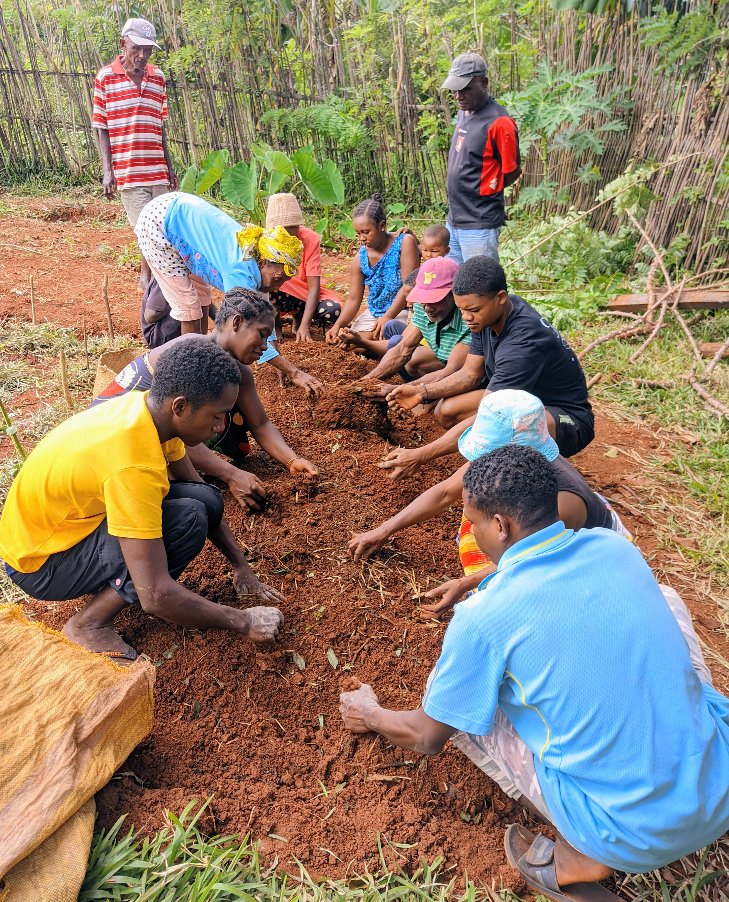
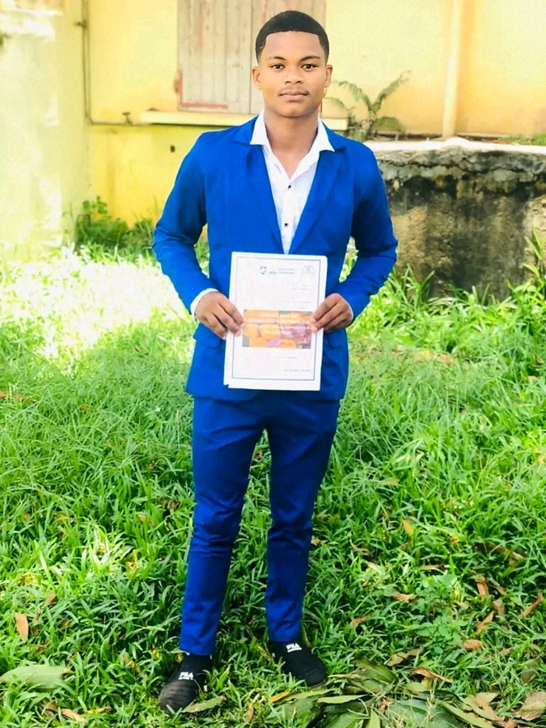
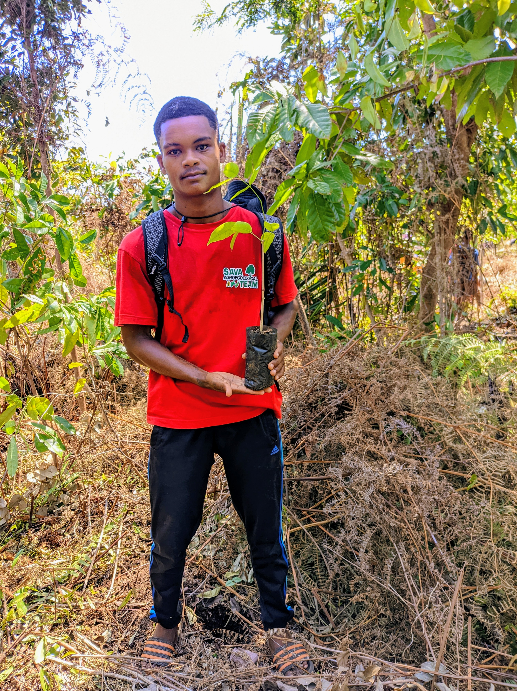
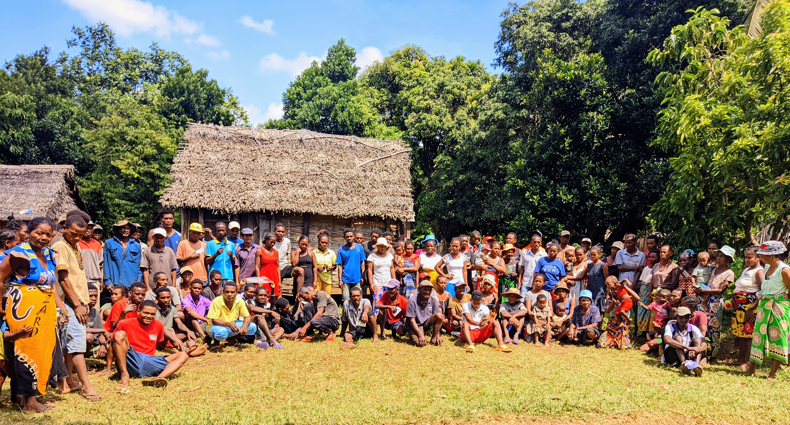
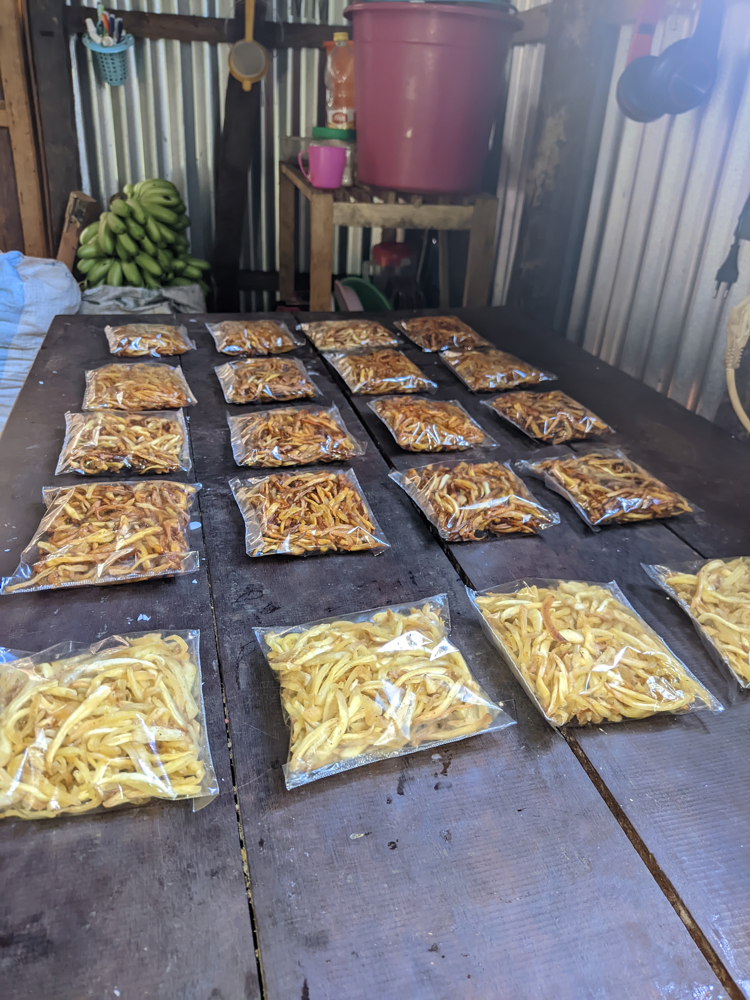
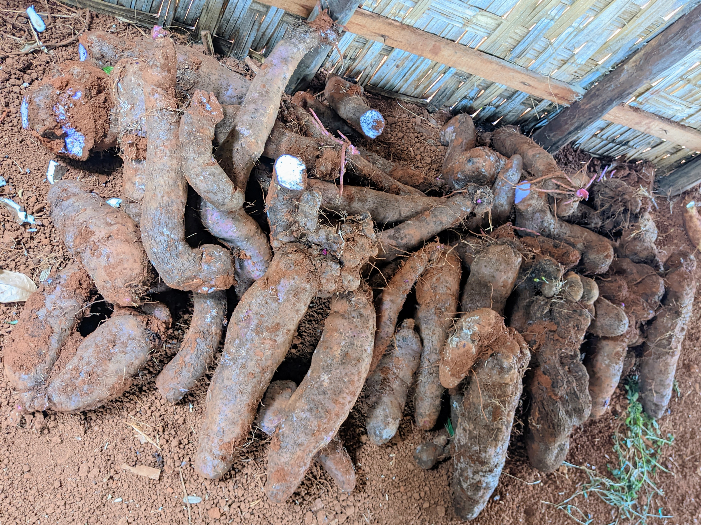

🌱 Agriculture
Techniques agricoles et accompagnement du développement rural.

Animateur Rural • Technicien Agricole • Technicien en Biochimie Alimentaire

Techniques agricoles et accompagnement du développement rural.

Protection de l'environnement et gestion durable des ressources naturelles.

Animation et accompagnement des communautés rurales.

Transformation et valorisation des produits agricoles et alimentaires.

Valorisation responsable et durable des ressources naturelles.

Découvrez quelques-unes de mes réalisations, expériences et travaux réalisés au fil des années dans les domaines de l'agriculture, de l'environnement, de l'animation rurale, de la biochimie alimentaire et de la valorisation des ressources naturelles.

Présentation de mes travaux et expériences dans le domaine de l'agriculture et du développement rural.

Activités d'animation, de sensibilisation et d'accompagnement auprès des communautés rurales.

Travaux liés à la transformation et à la valorisation des produits agricoles et alimentaires.

Actions et activités liées à la protection de l'environnement et à la valorisation des ressources naturelles.